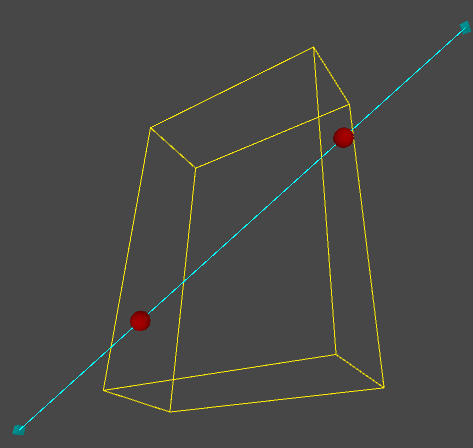

Slab-based Intersection
2017-6-8
以前的一篇文章介绍了射线和立方体相交的原理，其实立方体可以看做是 Discrete-orientation Polytops(k-DOPs) 的一种特殊情况，这里实现了一个版本，效果如下图：

演示代码：
public Transform startT = null;
public Transform endT = null;
public Vector3 boundsSize = Vector3.one * 3;
private Bounds bounds = new Bounds(Vector3.zero, Vector3.one * 3);
private void OnDrawGizmos()
{
// Resize bounds
bounds.size = boundsSize;
// Transform line segment from world space to local space
Matrix4x4 w2l = transform.worldToLocalMatrix;
Vector3 startP = w2l.MultiplyPoint(startT.position);
Vector3 endP = w2l.MultiplyPoint(endT.position);
// Draw bounds
Gizmos.color = Color.yellow;
Gizmos.matrix = transform.localToWorldMatrix;
Gizmos.DrawWireCube(bounds.center, bounds.size);
// Draw line segment
Gizmos.color = Color.cyan;
Gizmos.DrawCube(startP, Vector3.one * 0.3f);
Gizmos.DrawCube(endP, Vector3.one * 0.3f);
Gizmos.DrawLine(startP, endP);
Vector3 min = bounds.min;
Vector3 max = bounds.max;
Vector3 dir = endP - startP;
Vector3 oneOverDir = new Vector3(1.0f / dir.x, 1.0f / dir.y, 1.0f / dir.z);
// Slabs
float _minSlabX = (min.x - startP.x) * oneOverDir.x;
float _minSlabY = (min.y - startP.y) * oneOverDir.y;
float _minSlabZ = (min.z - startP.z) * oneOverDir.z;
float _maxSlabX = (max.x - startP.x) * oneOverDir.x;
float _maxSlabY = (max.y - startP.y) * oneOverDir.y;
float _maxSlabZ = (max.z - startP.z) * oneOverDir.z;
// Min/Max Slabs
float minSlabX = Mathf.Min(_minSlabX, _maxSlabX);
float minSlabY = Mathf.Min(_minSlabY, _maxSlabY);
float minSlabZ = Mathf.Min(_minSlabZ, _maxSlabZ);
float maxSlabX = Mathf.Max(_minSlabX, _maxSlabX);
float maxSlabY = Mathf.Max(_minSlabY, _maxSlabY);
float maxSlabZ = Mathf.Max(_minSlabZ, _maxSlabZ);
float minSlab = Mathf.Max(minSlabX, minSlabY, minSlabZ);
float maxSlab = Mathf.Min(maxSlabX, maxSlabY, maxSlabZ);
// Check hit
bool bHit = maxSlab >= 0.0f && maxSlab >= minSlab && minSlab <= 1.0f;
if(bHit)
{
Gizmos.color = Color.red;
int hitSurface = 0;
if (minSlab >= 0 && minSlab <= 1)
{
// Draw first hit point
++hitSurface;
Gizmos.DrawSphere(startP + new Vector3(minSlab * dir.x, minSlab * dir.y, minSlab * dir.z), 0.4f);
}
if (maxSlab >= 0 && maxSlab <= 1)
{
// Draw second hit point
++hitSurface;
Gizmos.DrawSphere(startP + new Vector3(maxSlab * dir.x, maxSlab * dir.y, maxSlab * dir.z), 0.4f);
}
if (hitSurface == 0)
{
// line segment inside bounds
Debug.LogError("inside");
}
else
{
// line segment hit surface
Debug.LogError("hit");
}
}
else
{
// line segment hit nothing
Debug.LogError("nohit");
}
}